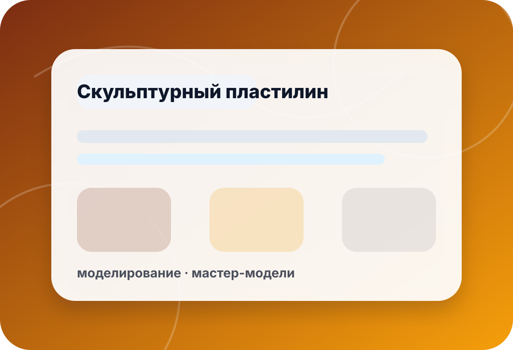

категория · preview
Cosclay — полимерная глина для ручного уточнения под задачу
Preview-страница помогает подготовить запрос по Cosclay для лепки, моделирования и прототипов. Цены, наличие, корзина и оплата не подключены; серия, свойства, цвет и фасовка уточняются вручную.
- цены
- нет
- наличие
- уточнить
- оплата
- выкл.
- preview
- noindex

ориентиры
Что уточнить перед выбором
Скульптурный материал подбирается по задаче, детализации, способу обработки и условиям дальнейшего формования.
без обещаний
Что не подтверждается автоматически
Preview не заменяет тест материала на вашей технологии.
Свойства Cosclay
Твёрдость, пластичность, цвет и детализация уточняются под задачу.
- твёрдость
- цвет
- деталь
 ◎
◎Процесс работы
Важно понимать, будет ли нагрев, шлифовка, формование или хранение модели.
- лепка
- нагрев
- форма
 ✦
✦Фасовка и получение
Актуальная фасовка, город и документы проверяются вручную.
- фасовка
- город
- B2B
чек-лист
Что указать в запросе по Cosclay
Назначение
Опишите, что моделируется и для чего нужна заготовка.
Указать:макет · мастер-модель · декор · прототипСвойства
Уточните желаемую твёрдость, детализацию и цвет.
Указать:твёрдость · цвет · детализация · обработкаДальнейший процесс
Важно знать, будет ли снятие формы, нагрев или окраска.
Указать:форма · нагрев · окраска · хранениеПолучение
Город, фасовка и документы согласуются после проверки наличия.
Указать:фасовка · город · доставка · контактмини-бриф
Подготовьте запрос по Cosclay
Форма в preview не отправляет данные на сервер. Скопируйте текст и отправьте его по телефону или почте.